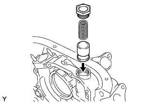
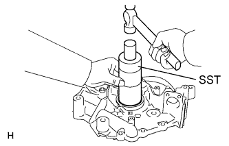

OIL PUMP > REASSEMBLY |
| 1. INSTALL OIL PUMP ROTOR SET |
 |
Apply engine oil to the oil pump rotor set.
Place the drive and driven rotors into the pump body with the marks facing the oil pump cover side.
| 2. INSTALL OIL PUMP COVER |
 |
Install the oil pump cover with the 10 screws.
| 3. INSTALL OIL PUMP RELIEF VALVE |
 |
Insert the relief valve and compression spring into the oil pump body hole.
Install the relief valve plug.
| 4. INSTALL OIL PUMP SEAL |
 |
Using SST and a hammer, tap in a new oil seal until its surface is flush with the oil pump body edge.
Apply MP grease to the lip of the oil seal.